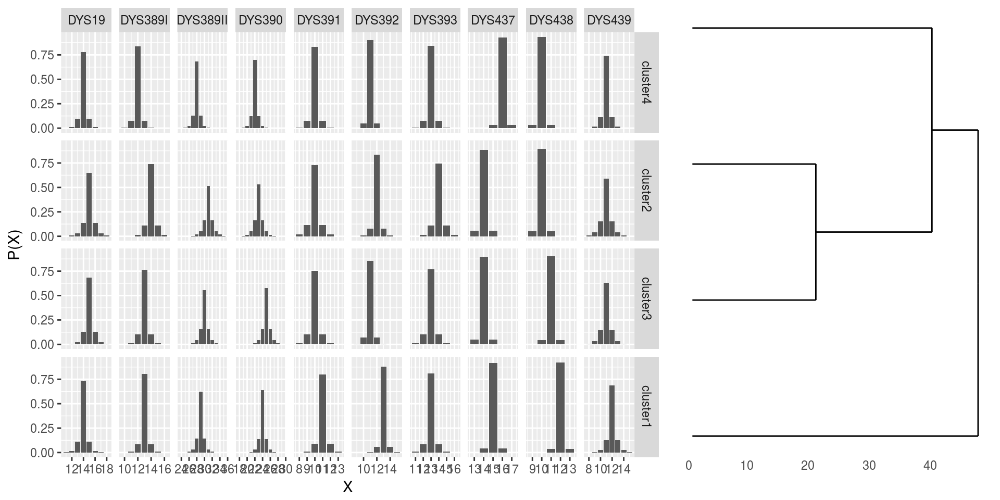
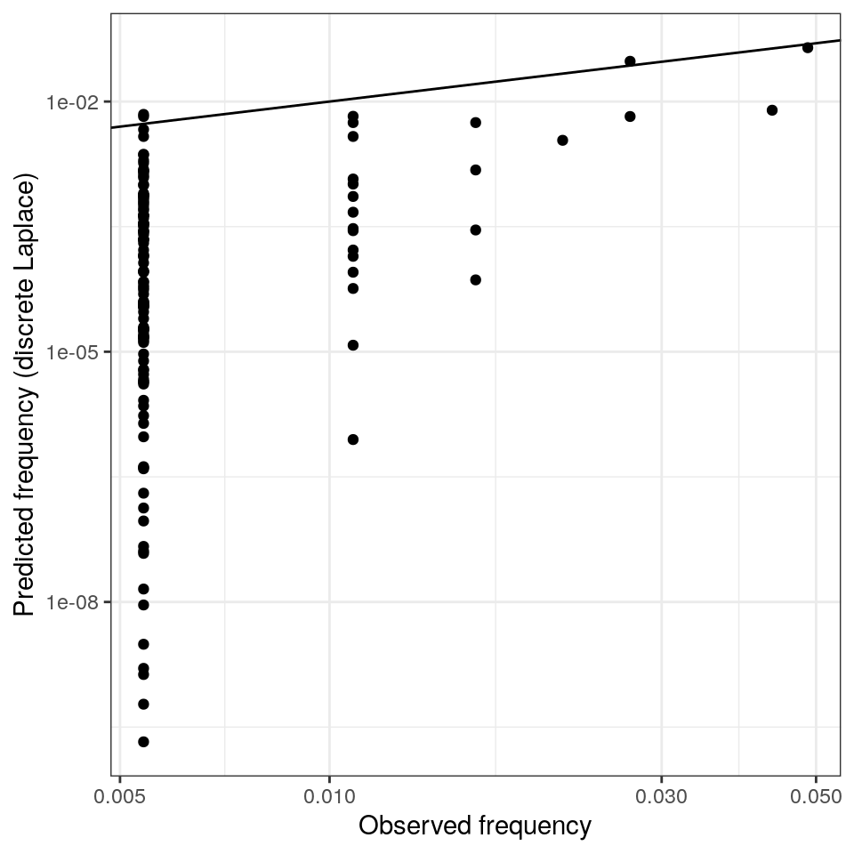

introduction.RmdThis vignette shows how to use the R package disclapmix that implements the method described in (Andersen, Eriksen, and Morling 2013b). For a more gentle introduction to the method, refer to (Andersen, Eriksen, and Morling 2013a).
A Danish reference database (Hallenberg et al. 2005) with \(n = 185\) observations (male Y-STR haplotypes) at \(r=10\) loci is available in the dane dataset. Let us load the package as well as the data:
library(disclapmix)
data(danes)The database is in compact format, i.e. one unique haplotype per row. To fit the model, we need one observation per row. This is done for example like this:
db <- as.matrix(danes[rep(1:nrow(danes), danes$n), 1:(ncol(danes)-1)])
str(db)## int [1:185, 1:10] 13 13 13 13 13 13 14 14 14 14 ...
## - attr(*, "dimnames")=List of 2
## ..$ : chr [1:185] "1" "2" "3" "4" ...
## ..$ : chr [1:10] "DYS19" "DYS389I" "DYS389II" "DYS390" ...Also, note that the database is now an integer matrix.
To fit a model using 2 clusters, the following command can be used (note the L postfix to emphasize that the number is an integer):
fit <- disclapmix(x = db, clusters = 2L)The number of clusters is not known beforehand. Here, the numbers 1 through 5 are tried and the best one according to the BIC criteria (Schwarz 1978) is taken:
clusters <- 1L:5L
fits <- lapply(clusters, function(clusters) {
fit <- disclapmix(x = db, clusters = clusters)
return(fit)
})
marginalBICs <- sapply(fits, function(fit) {
fit$BIC_marginal
})
bestfit <- fits[[which.min(marginalBICs)]]The best fit is now in the bestfit that can be inspected by print (default method called when the variable is just written) or summary:
bestfit## disclapmixfit from 185 observations on 10 loci with 4 clusters.summary(bestfit)## disclapmixfit from 185 observations on 10 loci with 4 clusters.
##
## EM converged: TRUE
## Number of central haplotype changes: 0
## Total number of EM iterations: 16
## Model observations (n*loci*clusters): 1850
## Model parameters ((clusters*loci)+(loci+clusters-1)+(clusters-1)): 56
## GLM method: internal_coef
## Initial central haplotypes supplied: FALSE
## Method to find initial central haplotypes: pamWe can also plot the fitted model:
plot(bestfit)
There are important information returned by disclapmix, e.g. the central haplotypes and the dispersion parameters for the discrete Laplace distributions:
bestfit$y## DYS19 DYS389I DYS389II DYS390 DYS391 DYS392 DYS393 DYS437 DYS438
## [1,] 14 13 29 24 11 13 13 15 12
## [2,] 15 14 31 23 10 12 14 14 10
## [3,] 15 13 30 25 10 11 13 14 11
## [4,] 14 12 28 22 10 11 13 16 10
## DYS439
## [1,] 12
## [2,] 11
## [3,] 11
## [4,] 11bestfit$disclap_parameters## DYS19 DYS389I DYS389II DYS390 DYS391 DYS392
## cluster1 0.1519902 0.10790796 0.2309797 0.2190487 0.11291165 0.06488933
## cluster2 0.2119974 0.15051099 0.3221725 0.3055310 0.15749018 0.09050823
## cluster3 0.1874694 0.13309693 0.2848973 0.2701812 0.13926864 0.08003646
## cluster4 0.1235191 0.08769439 0.1877120 0.1780160 0.09176078 0.05273412
## DYS393 DYS437 DYS438 DYS439
## cluster1 0.10614775 0.04510183 0.04104708 0.1842068
## cluster2 0.14805584 0.06290844 0.05725284 0.2569333
## cluster3 0.13092584 0.05562996 0.05062871 0.2272062
## cluster4 0.08626391 0.03665325 0.03335805 0.1497008The returned object is described in ?disclapmix and objects can be inspected using e.g. str().
Haplotype frequencies can be obtained using the predict function. Note, that this is done per haplotype (danes) and not per observation (db):
disclap_estimates <- predict(bestfit, newdata = as.matrix(danes[, 1:(ncol(danes) - 1)]))These can be compared to the database frequencies:
plot(x = danes$n/sum(danes$n),
y = disclap_estimates,
xlab = "Observed frequency",
ylab = "Predicted frequency (discrete Laplace)",
log = "xy")
abline(0, 1)
Andersen, Mikkel Meyer, Poul Svante Eriksen, and Niels Morling. 2013a. “A gentle introduction to the discrete Laplace method for estimating Y-STR haplotype frequencies.” Preprint, ArXiv:1304.2129.
———. 2013b. “The discrete Laplace exponential family and estimation of Y-STR haplotype frequencies.” Journal of Theoretical Biology 329: 39–51.
Hallenberg, Charlotte, Karsten Nielsen, Bo Simonsen, Juan Sanchez, and Niels Morling. 2005. “Y-Chromosome Str Haplotypes in Danes.” Forensic Science International 155 2-3: 205–10.
Schwarz, Gideon. 1978. “Estimating the Dimension of a Model.” Annals of Statistics 6 (2): 461–64.